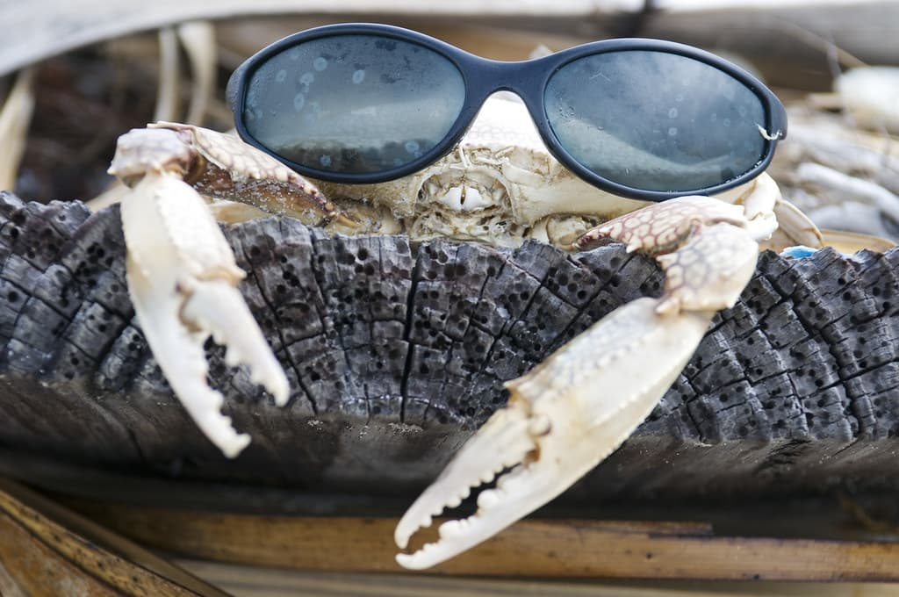
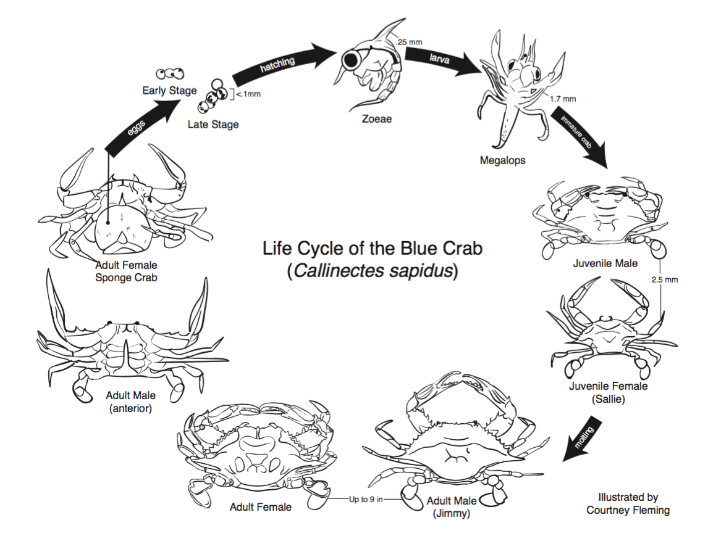

Childhood and Crustaceans
Childhood and Crustaceans
A brief introduction to me and crabs
Hello. My name is Emma, and I am a second year Biochem student. I am a casual enjoyer of crustaceans. Crabs and other such crustaceans can sometimes be thought of as the insects of the sea, and this is because they share structural similarities, and also are arthropods, which include bugs and insects. This, however is misleading as there are other insects that live in the sea and are actual insects. Crabs, unlike insects, have 10 legs instead of 6, automatically disqualifying them from the insect category. Crabs also tend to be more muscular than insects, hence why people eat them.
Some Data:
Types of crustaceans
- crab
- krill
- mantis shrimp
- prawn
- crayfish
- sand hopper
- ostracod
- copepod
- brine shrimp
- barnacles
Crabs vs insects
| Features |
Crab |
Insect |
| Eyes |
usually two |
usually two |
| Skin |
exoskeleton |
exoskeleton |
| Legs |
10 |
6 |
| Wings |
no :( |
yes |
| Live in water |
usually |
sometimes |

This is a photo of me from 2004. Beneath is a photo of a crab that I happen to like. The crab is simply just chilling.

hehe hoho funny
More about crabs

Unsurprisingly, crabs look like crabs for most of their life cycle, except for the bit at the begining. It appears that crabs, alike lobsters, never stop molting, and thus growing. In lobsters, this does not result in imortality as the energy cost of molting inccreases with each molt, and as such they may die simply from the process of molting.
If you want to see a really funky life cycle, look up jellyfish.
Now how does this relate to my childhood? As a child i would find animals such as turtles and lizards in my yard. I was a big fan of them. Crabs on the other hand, i have not have as much experience with. The closest experience I had with them was the ones with really long legs that are at the georgia aquarium. They were kind of scary. Also I'm allergic to them, so i couldn't eat them. But now I have moved past my old ways and am an average crustacean enjoyer.
For more fun crab things:
Click here -->

Crab Information :)